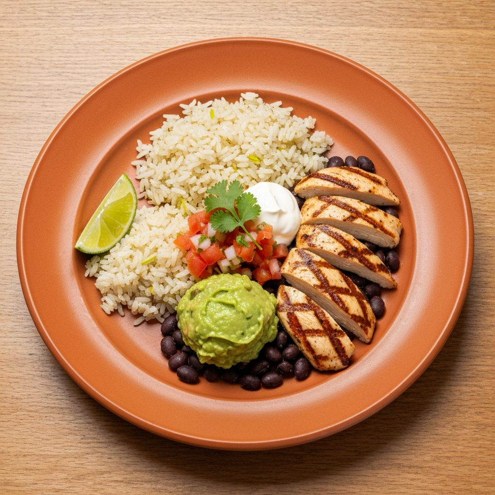

About Plated
A New Delhi restaurant built on one idea.
One plate at a time
Plated started in 2026 in Panchsheel Park with a simple rule: every guest gets one complete dish, not a string of courses. We take comfort foods from Korea, Italy, Mexico and beyond, and rebuild them with refined ingredients and careful technique.
The result is food that feels familiar and tastes like a small occasion.

Seasonal
Dishes change with what is best right now.
Considered
Each plate is balanced in flavour, texture and colour.
Intimate
A calm room where the food is the focus.